0. Словарь
| Слово | Простыми словами |
|---|---|
| БСП | Библиотека стандартных подсистем. Общий «фундамент» типовых конфигураций 1С: пользователи, права, печать, отчёты, доп. отчёты. В ЗГУ, БГУ, ЗУП, БП он одинаковый |
| Дополнительные отчеты и обработки | Подсистема БСП и справочник с тем же именем. Сюда загружают внешние .erf и .epf, и БСП сама показывает их пользователям |
| Регистрация | Сведения, которые внешний файл сообщает БСП о себе: что это, какая версия, какие команды |
СведенияОВнешнейОбработке |
Экспортная функция в модуле объекта внешнего отчёта. БСП вызывает её при загрузке файла и читает из неё регистрацию |
| Команда | Пункт, по которому пользователь запускает отчёт. Один файл может дать несколько команд |
| Размещение | В каком разделе программы (Кадры, Зарплата…) лежит команда или вариант отчёта |
| Быстрый доступ | Список пользователей, у которых команда выведена на виду, без поиска по спискам |
| Публикация | Состояние доп. отчёта: «Используется», «Режим отладки» (видит только администратор), «Отключена» |
| Безопасный режим | Отчёт работает с ограничениями: не может обращаться к файлам, внешним программам и т. п. Для отчёта, который только читает данные, это правильный выбор |
| Хранилище вариантов | Свойство отчёта. Указывает, где хранить варианты, которые сохраняет пользователь. В БСП это ХранилищеВариантовОтчетов |
| Вариант отчёта | Из задачи 4.3: готовый набор настроек. БСП размещает на панели отчётов именно варианты |
| Универсальная форма отчёта | Форма, которую БСП подставляет всем подключённым отчётам: «Сформировать», «Настройки…», «Отправить» и т. д. Свою форму рисовать не нужно |
| Демо-база | База с вымышленными данными, которую фирма 1С кладёт в поставку конфигурации. Для учёбы и показа клиентам |
| Шаблон конфигурации | Файлы поставки, из которых стартер 1С создаёт новую базу: пустую или демо |
releases.1c.ru |
Сайт фирмы 1С с дистрибутивами. Вход — по подписке ИТС, у франчайзи она есть |
1. Что это, зачем, где найти
Какую проблему решаем
В 4.4а ты открыл .erf через «Файл» → «Открыть». Клиенту так не отдают:
- пользователь каждый раз ищет файл на диске и подтверждает предупреждение безопасности;
- у пользователя без полных прав «Файл» → «Открыть» для внешних отчётов вообще закрыт;
- администратор не видит, какие внешние файлы и каких версий ходят по базе.
Решение — подсистема БСП «Дополнительные отчеты и обработки». Администратор один раз загружает файл в базу, указывает раздел и пользователей. Дальше отчёт открывается из меню, как типовой, а файл хранится внутри базы.
Аналогия: 4.4а — принести флешку и открыть файл. 4.4б — установить программу через администратора: она появилась в меню, обновляется централизованно, и все знают, что установлено.
Два барьера, которые мы прошли
| Барьер | Что видно | Почему | Решение |
|---|---|---|---|
| Отчёт написан для другой конфигурации | «Таблица не найдена "Документ.ПриходТовара.Товары"» | В ЗГУ нет объектов Uchebnaya |
Отчёт с базовым проектом ЗГУ |
| В файле нет регистрации | «Метод объекта не обнаружен (СведенияОВнешнейОбработке)» | БСП не знает, что это за файл | Функция СведенияОВнешнейОбработке в модуле объекта |
Как это работает внутри
Что происходит после «Добавить из файла…»:
- БСП копирует
.erfво временный файл и подключает его как внешний отчёт. - Создаёт объект отчёта и вызывает его функцию
СведенияОВнешнейОбработке(). Нет функции — ошибка «Метод объекта не обнаружен». - Читает из возвращённой структуры вид, версию, безопасный режим и команды. Заполняет карточку справочника.
- Проверяет свойства отчёта: есть ли основная схема, указано ли хранилище вариантов. Отсюда сообщение «Хранилище вариантов не заполнено».
- При «Записать» сохраняет сам файл внутрь базы, в элемент справочника. С этого момента файл на диске не нужен.
- По размещению и быстрому доступу БСП выводит команду в разделах, а по вариантам — на панели отчётов.
Команда и вариант — два разных пути к отчёту
| Команда | Вариант отчёта | |
|---|---|---|
| Откуда берётся | Из СведенияОВнешнейОбработке (Команды.Добавить()) |
Из схемы СКД, вкладка «Настройки», если указано хранилище вариантов |
| Где размещается | Карточка → вкладка «Команды» → «Размещение» | Карточка → вкладка «Варианты отчета» → «Разместить в разделах…» |
| Где видит пользователь | Раздел → «Сервис» → «Дополнительные отчеты» | Раздел → «…отчеты» (панель отчётов) |
Где найти в ЗГУ
«Администрирование» → «Печатные формы, отчеты и обработки» → галка и ссылка «Дополнительные отчеты и обработки».
2. Как сделать
Карта шагов
Этап 1. Готовим демо-базу (шаги 1–4)
| Шаг | Что делаем | Зачем |
|---|---|---|
| 1 | Ставим шаблоны ЗГУ | Демо-база лежит внутри поставки конфигурации |
| 2 | Создаём базу из шаблона «демо» | Учимся на вымышленных данных, а не на базе клиента |
| 3 | Входим администратором | Подключать внешние отчёты может только пользователь с полными правами |
| 4 | Включаем «Дополнительные отчеты и обработки» | Пока галка выключена, загрузить .erf некуда |
Этап 2. Конфигурация ЗГУ в EDT (шаги 5–6)
| Шаг | Что делаем | Зачем |
|---|---|---|
| 5 | Импортируем конфигурацию ЗГУ в EDT | Нужен базовый проект: без него конструктор запроса не видит справочники ЗГУ |
| 6 | Смотрим справочник ПодразделенияОрганизаций |
Проверяем, что поля для запроса есть и что значит Владелец |
Этап 3. Делаем отчёт (шаги 7–10)
| Шаг | Что делаем | Зачем |
|---|---|---|
| 7 | Создаём проект внешнего отчёта с базовым проектом ZGU |
Отчёт должен работать на объектах ЗГУ |
| 8 | Пишем запрос | Берём подразделения и их организации, без помеченных на удаление |
| 9 | Добавляем поле-счётчик и ресурс | Чтобы посчитать подразделения и при этом видеть их названия |
| 10 | Настраиваем структуру | Организация, под ней список подразделений |
Этап 4. Сборка и регистрация (шаги 11–13)
| Шаг | Что делаем | Зачем |
|---|---|---|
| 11 | Экспорт и сборка скриптом для ЗГУ | Собирать надо на базе ЗГУ и под администратором |
| 12 | Пробуем загрузить без регистрации | Видим, что БСП требует функцию регистрации |
| 13 | Пишем СведенияОВнешнейОбработке |
Сообщаем БСП вид, версию и команду отчёта |
Этап 5. Подключаем пользователю (шаги 14–17)
| Шаг | Что делаем | Зачем |
|---|---|---|
| 14 | Загружаем отчёт в справочник | Файл попадает в базу, карточка заполняется из регистрации |
| 15 | Размещаем команду в разделе «Кадры» | Иначе пользователь отчёт нигде не увидит |
| 16 | Даём быстрый доступ | Команда выводится выбранным пользователям на виду |
| 17 | Открываем отчёт как пользователь | Проверяем результат глазами клиента |
Этап 6. Обновляем отчёт (шаги 18–20)
| Шаг | Что делаем | Зачем |
|---|---|---|
| 18 | Указываем хранилище вариантов и представление варианта, версия 1.1 | Убираем предупреждение и даём отчёту полноценные варианты |
| 19 | «Обновить из файла…» | Так меняют уже подключённый отчёт, не создавая новый |
| 20 | Размещаем вариант в разделе | Отчёт появляется на панели «Кадровые отчеты» |
Схема пути «EDT → XML → .erf» — в конспекте 4.4а, раздел 1, «Весь путь одной схемой».
Шаг 1. Установить шаблоны ЗГУ
Зачем. Демо-база ЗГУ распространяется внутри поставки конфигурации. Её не скачать отдельно: дистрибутив берут на releases.1c.ru по подписке ИТС франчайзи. Раздел «Зарплата и кадры государственного учреждения, редакция 3» → нужная версия → «Полный дистрибутив». Версию выбирай по своей платформе: на странице версии написано «для платформы не ниже…». У нас 3.1.38.151 для 8.3.27.
Что получим. Шаблоны в каталоге ~/.1cv8/1C/1cv8/tmplts/, их видит стартер 1С.
Что делаем. Распаковать архив, запустить setup.app (правый клик → «Открыть»). Каталог шаблонов оставить по умолчанию.
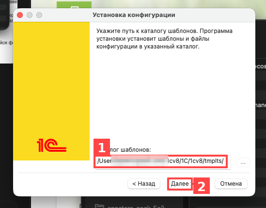
| № | Что это |
|---|---|
| 1 | Каталог по умолчанию. Не меняй: стартер ищет шаблоны именно здесь |
| 2 | «Далее» |
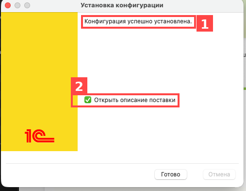
| № | Что это |
|---|---|
| 1 | «Конфигурация успешно установлена» |
| 2 | Описание поставки — можно снять галку, для учёбы не нужно |
Если установщик не запускается («нет прав доступа»), в Терминале: chmod +x <папка>/setup.app/Contents/MacOS/setup && xattr -cr <папка>/setup.app. Архив собран на Windows, и при распаковке право на запуск теряется.
Шаг 2. Создать демо-базу
Зачем. Учиться и делать скрины можно только на вымышленных данных. Реальная база клиента — это ФИО, паспорта и зарплаты живых людей (ловушка 1).
Что получим. Папку ~/1C/bases/ZGU_Demo (около 1,3 ГБ) и строку базы в стартере.
Что делаем. Стартер → «Добавить…» → «Создание новой информационной базы» → «Создание информационной базы из шаблона».
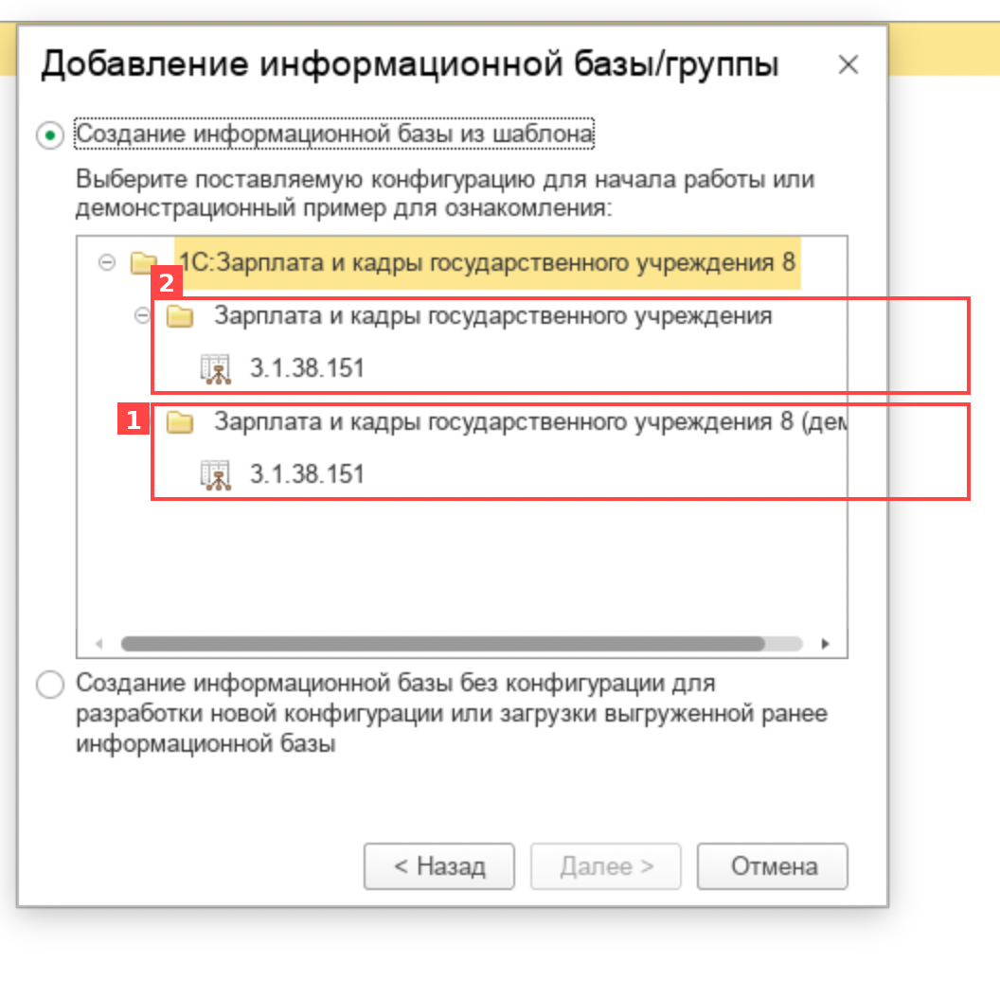
| № | Что это |
|---|---|
| 1 | «…8 (демо)» — демонстрационная база с данными. Выбираем её |
| 2 | Без «(демо)» — пустая база, только конфигурация |
Дальше: имя, «На данном компьютере», каталог ~/1C/bases/ZGU_Demo (латиницей) → «Готово». Создание идёт несколько минут.
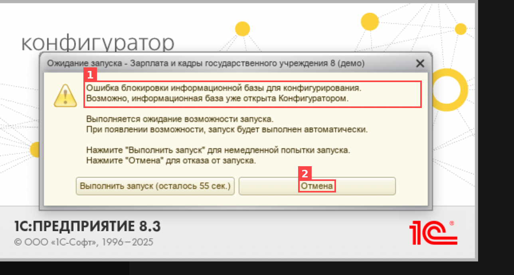
| № | Что это |
|---|---|
| 1 | «Ошибка блокировки информационной базы для конфигурирования» — базу держит другой процесс 1С |
| 2 | «Отмена». Дождись окончания создания и закрой лишние окна 1С |
Конфигуратор в этой задаче не нужен — запускаем сразу «1С:Предприятие». Первый запуск демо-базы долгий: идёт обновление и начальное заполнение, не прерывай.
Шаг 3. Войти администратором
Зачем. В демо-базе несколько пользователей с разными правами. Справочник «Дополнительные отчеты и обработки» доступен только полным правам. Под бухгалтером его просто не будет.
Что получим. В шапке программы — «Григорьянц А.А. (системный администратор)».
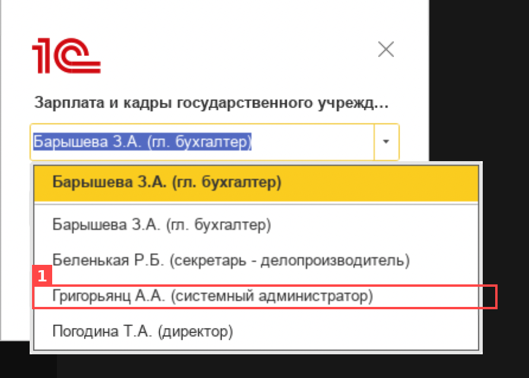
| № | Что это |
|---|---|
| 1 | Пользователь с полными правами. Пароля в демо-базе нет |
Окно «Интернет-поддержка пользователей» после входа закрой: для учёбы оно не нужно, логин и пароль туда не вводи.
Шаг 4. Включить дополнительные отчёты
Зачем. В БСП многие подсистемы выключены по умолчанию функциональными опциями: галка в «Администрировании». Пока она выключена, справочника нет в интерфейсе.
Что получим. Активную ссылку «Дополнительные отчеты и обработки».
Что делаем. «Администрирование» → «Печатные формы, отчеты и обработки».
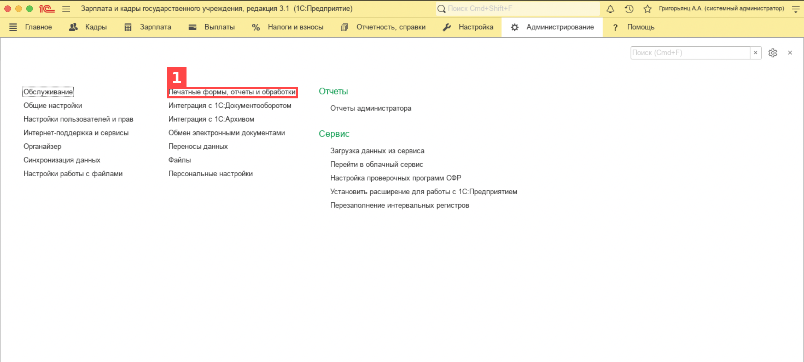
| № | Что это |
|---|---|
| 1 | «Печатные формы, отчеты и обработки» — всё про печать, отчёты и внешние файлы |
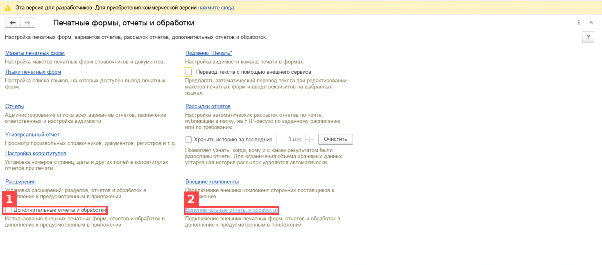
| № | Что это |
|---|---|
| 1 | Галка «Дополнительные отчеты и обработки» снята |
| 2 | Ссылка серая, не нажимается |
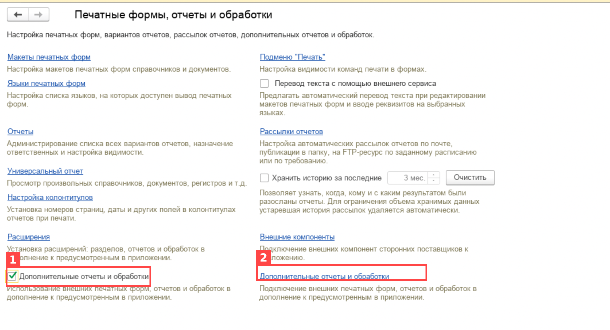
| № | Что это |
|---|---|
| 1 | Галка поставлена |
| 2 | Ссылка стала синей. Открываем |
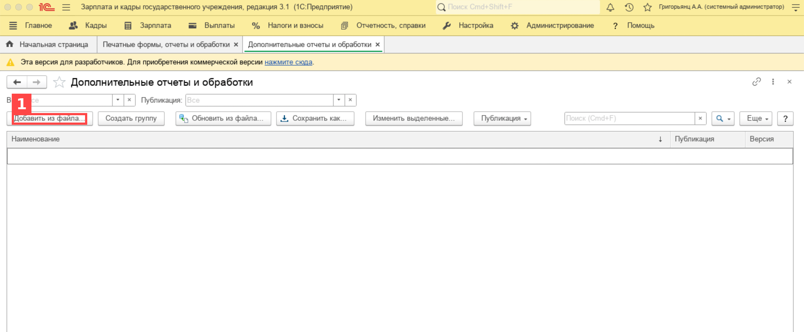
| № | Что это |
|---|---|
| 1 | «Добавить из файла…» — загрузка .erf или .epf |
Разбор: попробовали загрузить отчёт из 4.4а. «Добавить из файла…» → PrihodyPoTovaram.erf:
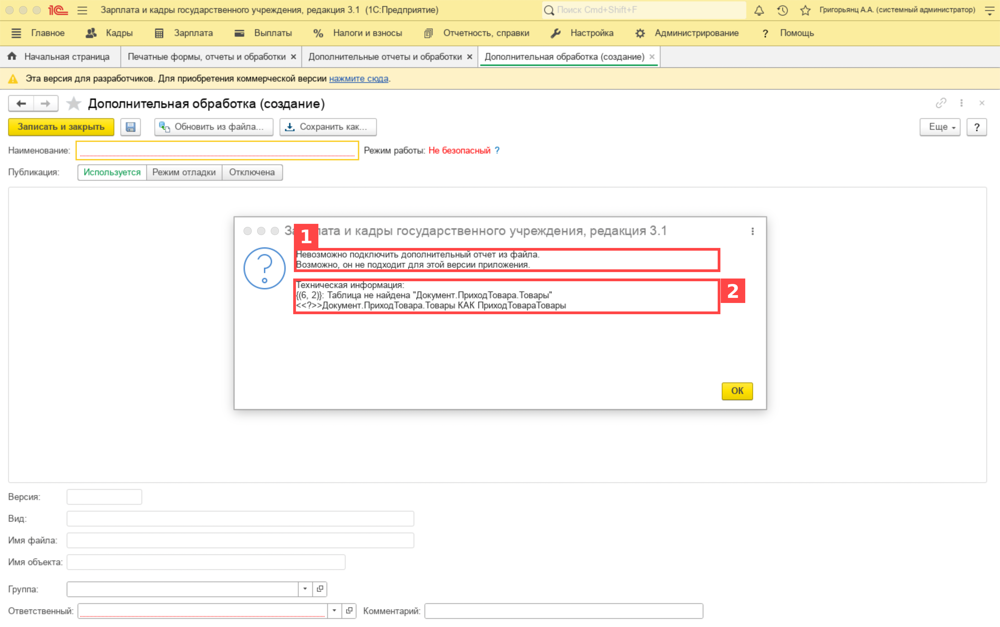
Uchebnaya в ЗГУ не подключается| № | Что это |
|---|---|
| 1 | «Невозможно подключить дополнительный отчет из файла» |
| 2 | Причина: «Таблица не найдена "Документ.ПриходТовара.Товары"» |
Внешний отчёт работает только в той конфигурации, на чьих объектах написан его запрос. В ЗГУ нет документа ПриходТовара. Поэтому для ЗГУ делаем новый отчёт с базовым проектом ЗГУ. Карточку закрываем без записи.
Шаг 5. Импортировать конфигурацию ЗГУ в EDT
Зачем. EDT должен знать объекты ЗГУ, иначе в конструкторе запроса не будет её справочников. Импортированная конфигурация станет базовым проектом для отчёта, а в главе 6 — для расширений.
Что получим. Проект ZGU в навигаторе со всеми объектами ЗГУ.
ЗГУ — тысячи объектов. Её держат в отдельной рабочей области zgu, чтобы не тормозил учебный проект. Как создать область и перенести в неё настройки — в конспекте 1.2, раздел «Новая рабочая область».
Что делаем. Закрыть 1С:Предприятие с демо-базой. В области zgu: навигатор → «Импорт конфигурации и расширений из информационной базы».
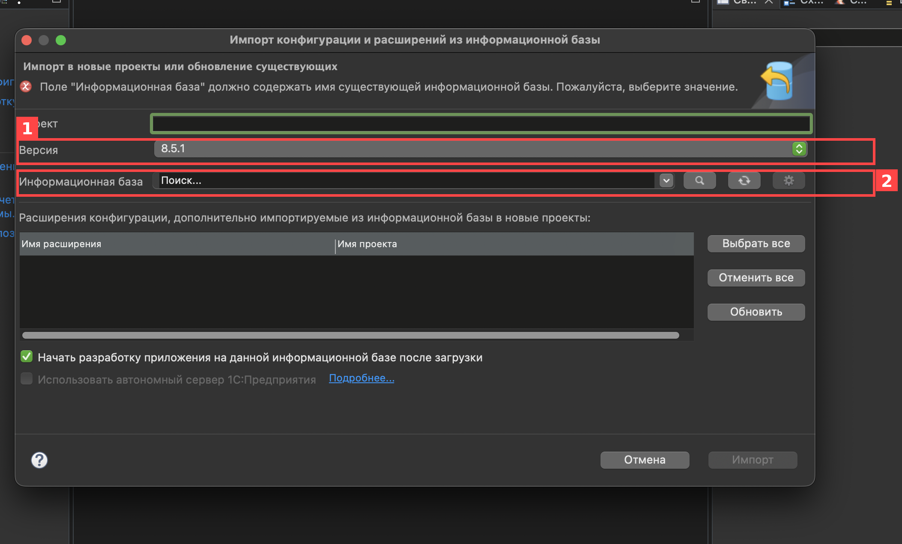
| № | Что это |
|---|---|
| 1 | Версия подставилась 8.5.1 — неправильно, нужна твоя 8.3.27 (как в ловушке 2 из 4.4а) |
| 2 | Информационная база не выбрана |
В «Информационная база» выбрать демо-базу. EDT попросит параметры доступа:
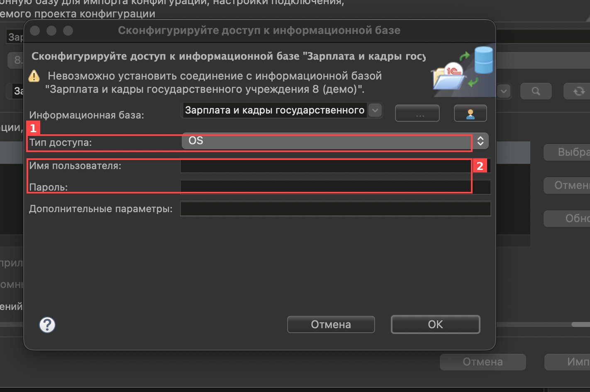
| № | Что это |
|---|---|
| 1 | «Тип доступа» по умолчанию OS — вход по учётке Mac, в демо-базе он не настроен |
| 2 | Имя пользователя и пароль 1С |
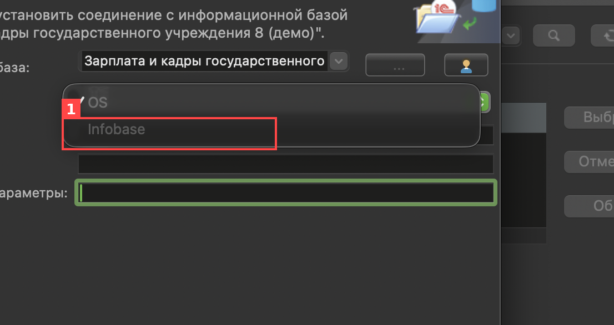
| № | Что это |
|---|---|
| 1 | Infobase — вход по пользователю 1С. Имя: Григорьянц А.А. (системный администратор), пароль пустой. Для выгрузки конфигурации нужны административные права |
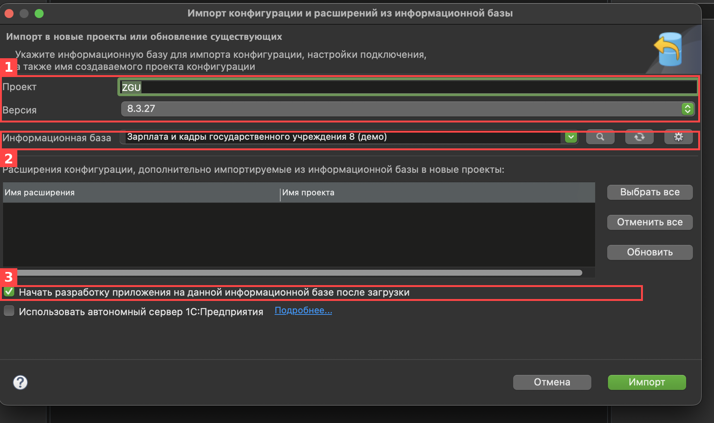
| № | Что это |
|---|---|
| 1 | Проект ZGU (латиницей: русские буквы в имени проекта потом мешают сборке), версия 8.3.27 |
| 2 | Демо-база |
| 3 | «Начать разработку приложения на данной информационной базе после загрузки» — EDT свяжет проект с базой. Понадобится в главе 6 |
«Импорт». Займёт 20–60 минут. Mac не должен уснуть.
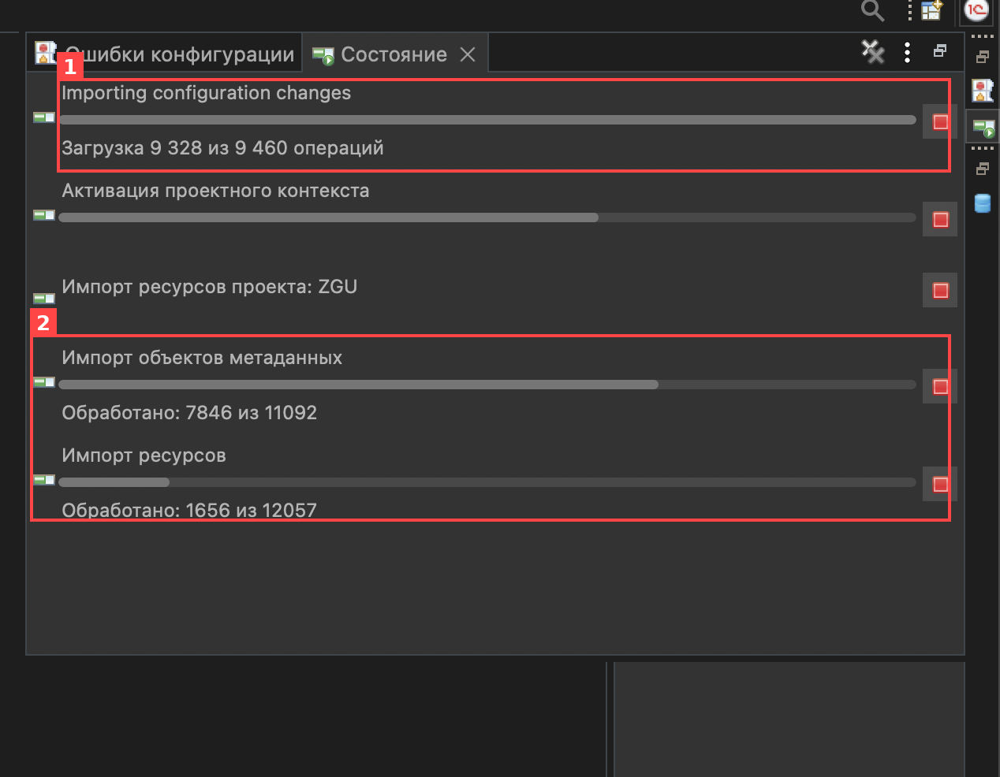
| № | Что это |
|---|---|
| 1 | Общий процесс: «Загрузка 9 328 из 9 460 операций» |
| 2 | Импорт 11 092 объектов метаданных и 12 057 ресурсов (модули, формы, макеты). Масштаб типовой конфигурации |
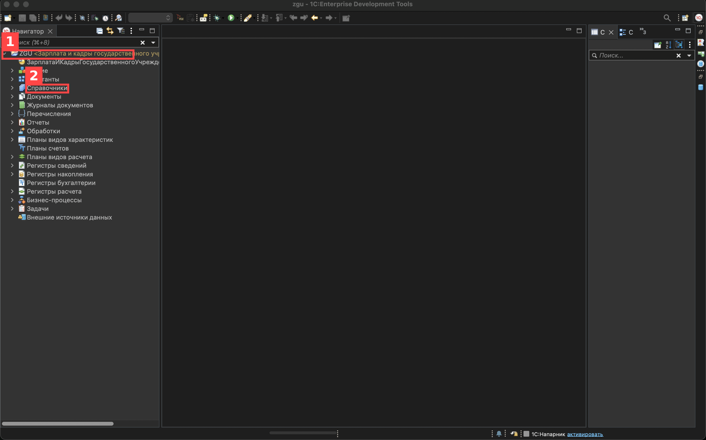
| № | Что это |
|---|---|
| 1 | Проект ZGU, корень — конфигурация «Зарплата и кадры государственного учреждения» |
| 2 | Справочники, документы, регистры ЗГУ — теперь их видит конструктор запроса |
Шаг 6. Посмотреть справочник ПодразделенияОрганизаций
Зачем. Перед запросом к чужой конфигурации проверяем объект: есть ли он, как устроен. В типовых много справочников с похожими именами.
Что получим. Уверенность, что поле Владелец — это организация.
Что делаем. Поиск над навигатором (Cmd+8) → ПодразделенияОрганизаций → двойной клик.
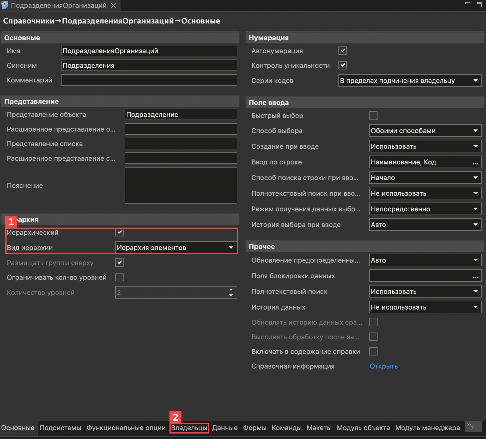
| № | Что это |
|---|---|
| 1 | Иерархический, «Иерархия элементов»: подразделения вложены друг в друга. Для нашего отчёта не мешает — каждое подразделение посчитается один раз |
| 2 | Вкладка «Владельцы» |
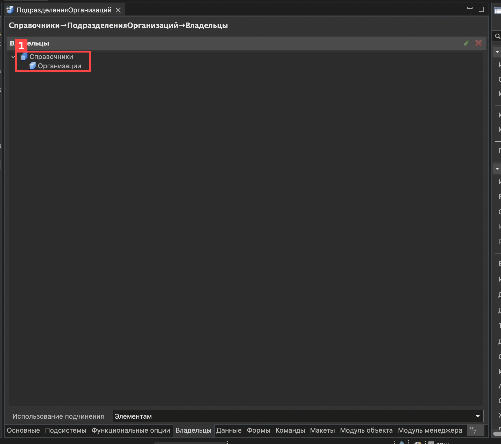
| № | Что это |
|---|---|
| 1 | Справочники.Организации. У подчинённого справочника поле Владелец ссылается на элемент справочника-владельца — значит, Владелец = организация |
Шаг 7. Проект внешнего отчёта для ЗГУ
Зачем. Тот же проект, что в 4.4а, но базовым проектом будет ZGU. Иначе ЗГУ отчёт не примет (разбор в шаге 4).
Что получим. Проект ПодразделенияПоОрганизациям рядом с ZGU.
Что делаем. «Файл» → «Новый» → «Другое…» → «Проект внешнего отчета».
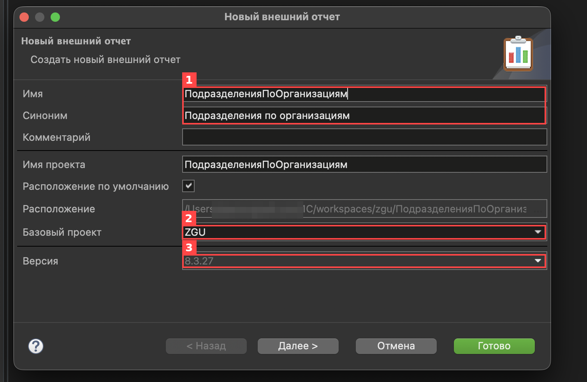
| № | Что это |
|---|---|
| 1 | Имя ПодразделенияПоОрганизациям и синоним «Подразделения по организациям». Синоним станет наименованием в справочнике доп. отчётов |
| 2 | Базовый проект ZGU |
| 3 | Версия 8.3.27 |
Дальше, как в 4.4а: открыть отчёт, создать основную схему компоновки, добавить «Набор данных – запрос», «Конструктор запроса…».
Шаг 8. Запрос
Зачем. Берём каждое подразделение и его организацию. Помеченные на удаление отсекаем: это то, что пользователь удалил, в отчёте оно лишнее.
Что получим. Набор данных с полями Подразделение и Организация.
Что делаем.
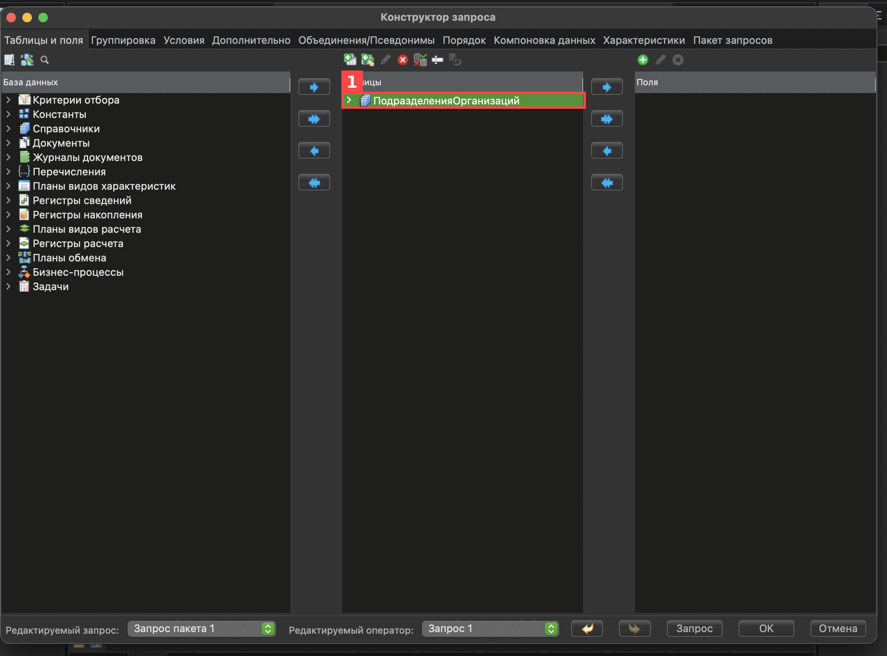
| № | Что это |
|---|---|
| 1 | ПодразделенияОрганизаций перенесён в «Таблицы». В «Поля» — Ссылка и Владелец |
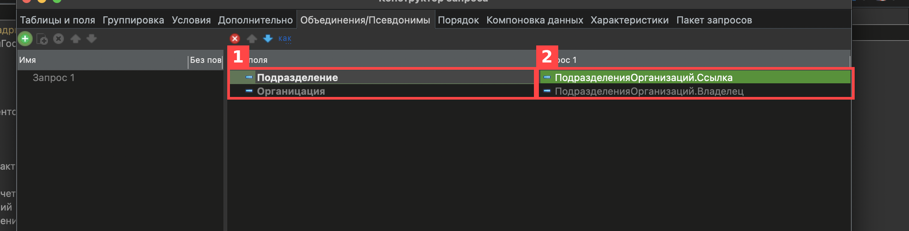
| № | Что это |
|---|---|
| 1 | Имена полей: Подразделение, Организация. Двойной клик по имени — редактирование |
| 2 | Откуда поле: Ссылка, Владелец. Без переименования колонки в отчёте назывались бы «Ссылка» и «Владелец» |
Условие. В EDT нет галки «Произвольное», как в Конфигураторе. Произвольное условие добавляется зелёным плюсом на вкладке «Условия» — открывается окно «Произвольное выражение».
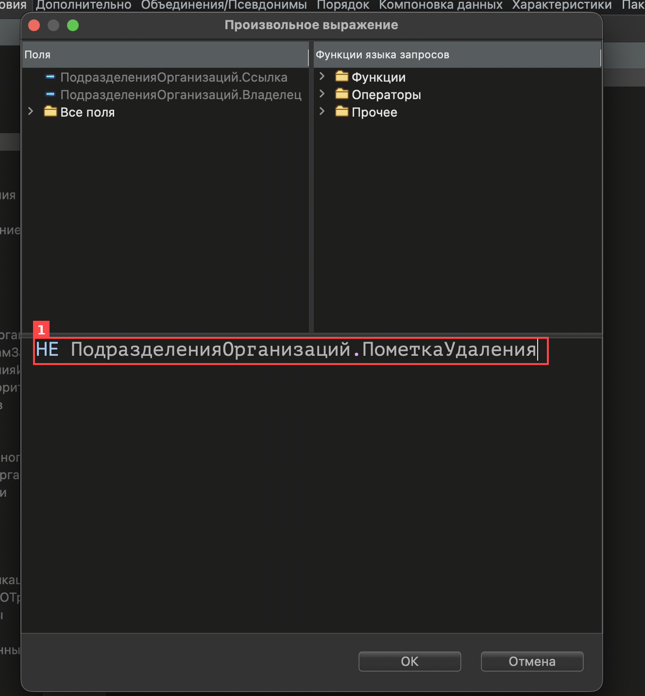
| № | Что это |
|---|---|
| 1 | НЕ ПодразделенияОрганизаций.ПометкаУдаления |
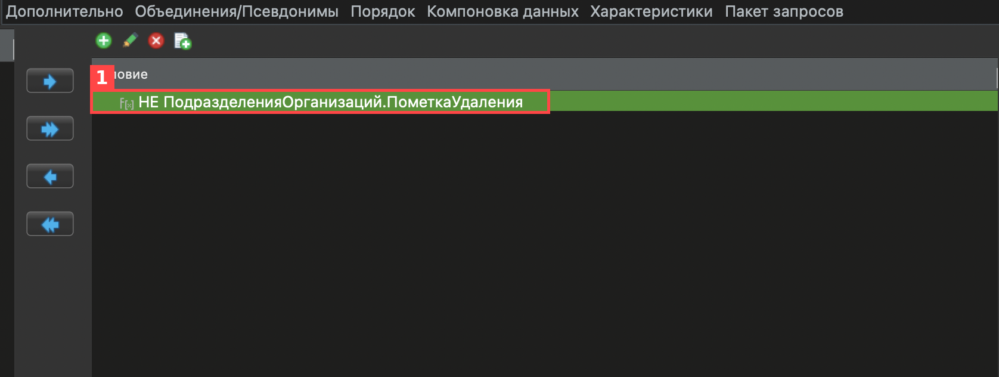
| № | Что это |
|---|---|
| 1 | Условие со значком f[x] — произвольное выражение |
Разбор: несовпадение псевдонима. Кнопка «Запрос» показала текст:
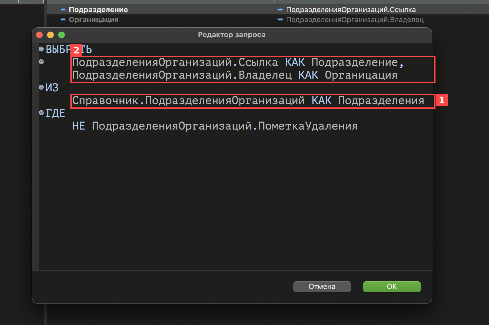
| № | Что это |
|---|---|
| 1 | Таблица названа КАК Подразделения |
| 2 | А поля и условие обращаются к ней как ПодразделенияОрганизаций. |
Имя после КАК — псевдоним таблицы, и все поля пишутся через него. 1С не найдёт ПодразделенияОрганизаций и выдаст «Поле не найдено». Исправляем на КАК ПодразделенияОрганизаций.
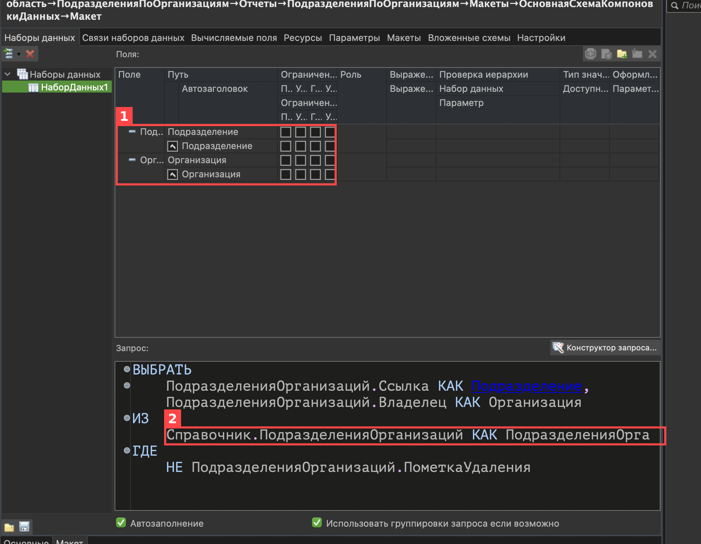
| № | Что это |
|---|---|
| 1 | Поля Подразделение и Организация |
| 2 | Исправленная строка ИЗ |
Шаг 9. Поле-счётчик и ресурс
Зачем. Нужно и количество подразделений у организации, и список их названий. Первая мысль — ресурс Количество(Подразделение). Но поле, ставшее ресурсом, выводится только посчитанным числом.
Что получим. Отдельное поле Количество для подсчёта, а Подразделение остаётся обычным полем с названием.
Разбор: ресурс по ссылке.
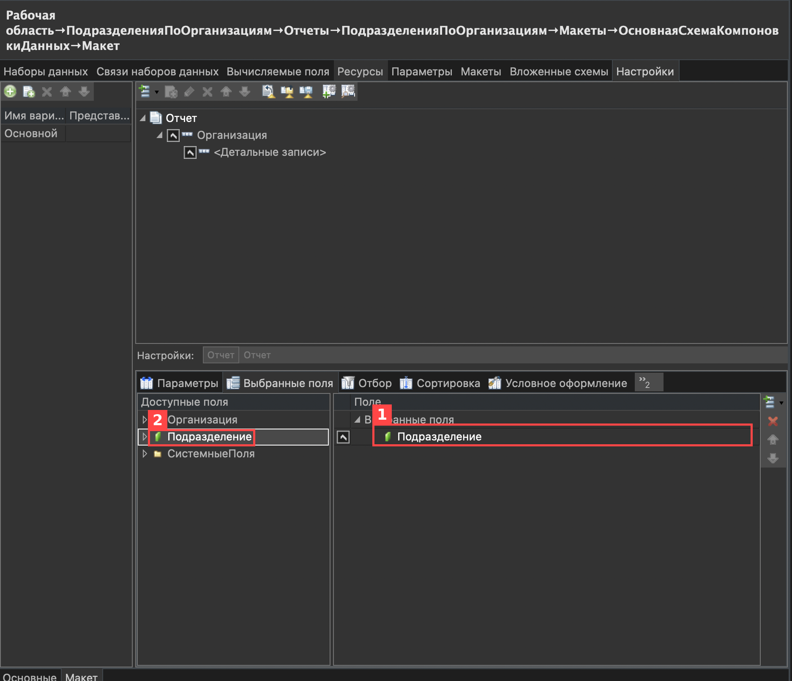
Подразделение стало ресурсом| № | Что это |
|---|---|
| 1 | В выбранных полях у Подразделение зелёный значок — это ресурс |
| 2 | В доступных полях он тоже помечен как ресурс |
В детальных записях вместо «Бухгалтерия», «Администрация» было бы 1 в каждой строке. Одно поле не может одновременно показывать значение и считать количество.
Что делаем.
- В текст запроса добавить третье поле:
ВЫБРАТЬ ПодразделенияОрганизаций.Ссылка КАК Подразделение, ПодразделенияОрганизаций.Владелец КАК Организация, 1 КАК Количество ИЗ Справочник.ПодразделенияОрганизаций КАК ПодразделенияОрганизаций ГДЕ НЕ ПодразделенияОрганизаций.ПометкаУдаления1 КАК Количество— в каждой строке число 1. Сумма единиц = количество строк. - «Ресурсы»: убрать
Подразделение, добавитьКоличество.
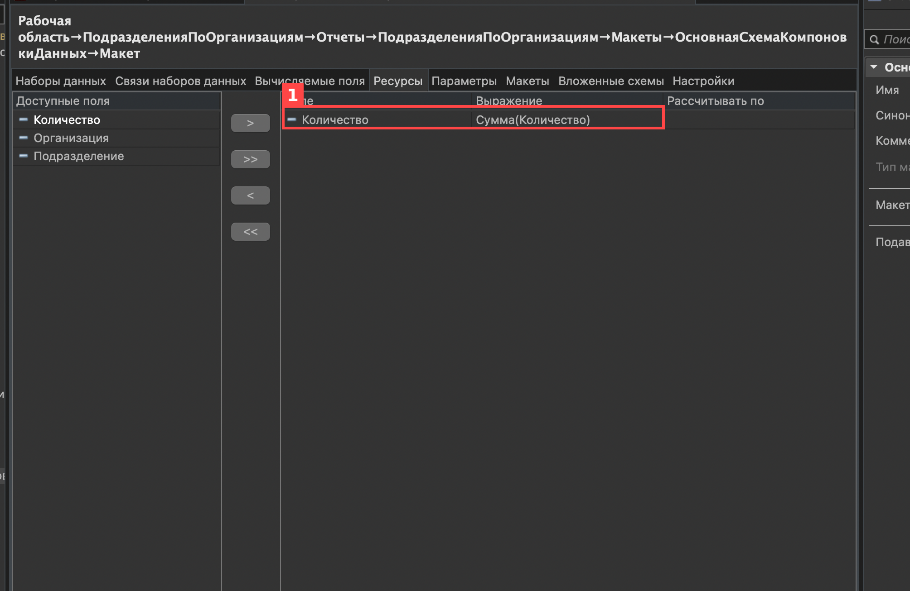
| № | Что это |
|---|---|
| 1 | Количество → Сумма(Количество) |
| Подход | Детальная строка | Итог по организации |
|---|---|---|
Ресурс Количество(Подразделение) |
1 вместо названия |
5 |
Поле 1 КАК Количество + Сумма(Количество) |
Название и 1 |
5 |
Это обычный приём в СКД: «поле-счётчик».
Шаг 10. Структура и выбранные поля
Зачем. Сверху организация с количеством подразделений, под ней список подразделений.
Что получим.
Отчет
└─ Организация
└─ <Детальные записи>
| Элемент | Что выводит |
|---|---|
Группировка Организация |
Одна строка на организацию, ресурс Количество сложен по ней |
<Детальные записи> (группировка без поля) |
Каждую строку запроса как есть — каждое подразделение |
Что делаем. «Настройки» → «Отчет» → группировка Организация → внутри неё группировка без поля. На уровне «Отчет» (есть вкладка «Параметры») в «Выбранные поля» — Подразделение и Количество. Организацию не добавляем: она уже в группировке.
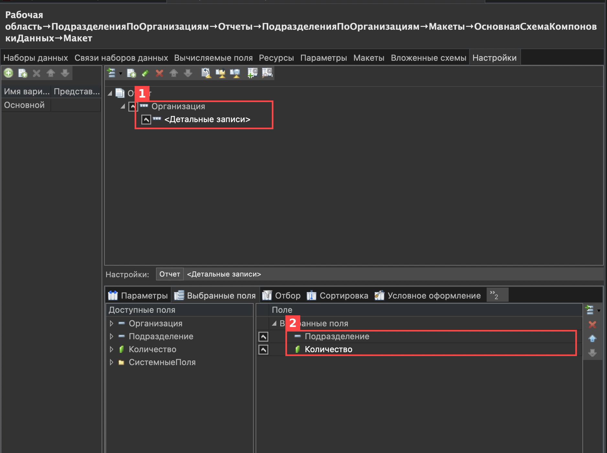
| № | Что это |
|---|---|
| 1 | Организация → <Детальные записи> |
| 2 | Подразделение (обычный значок) и Количество (ресурс) |
Cmd+S.
Шаг 11. Экспорт и сборка для ЗГУ
Зачем. .erf собирает платформа на базе той конфигурации, на объектах которой написан отчёт. Для ЗГУ — на демо-базе ЗГУ. В этой базе есть пользователи, поэтому конфигуратору нужно передать администратора. Для этого отдельный скрипт ~/1C/build-erf-zgu.command.
Что получим. ~/1C/build_zgu/PodrazdeleniyaPoOrganizatsiyam.erf.
| Учебная (4.4а) | ЗГУ (4.4б) | |
|---|---|---|
| Экспорт XML из EDT | ~/1C/workspaces/edu/Uchebnaya/external/<папка> |
~/1C/zgu/<папка> |
| Скрипт | build-erf.command |
build-erf-zgu.command |
| База | Uchebnaya_dev |
ZGU_Demo, пользователь Григорьянц |
| Готовый файл | ~/1C/build |
~/1C/build_zgu |
Что делаем. Правый клик по проекту → «Экспорт…» → «Внешние обработки и отчеты».
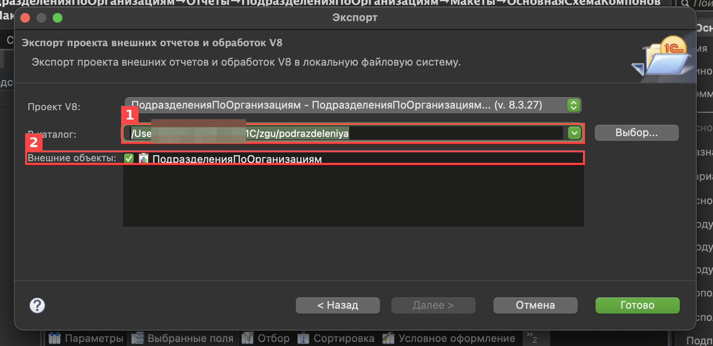
| № | Что это |
|---|---|
| 1 | Каталог ~/1C/zgu/podrazdeleniya — своя папка у каждого отчёта: EDT при экспорте очищает каталог |
| 2 | Отмечен отчёт ПодразделенияПоОрганизациям |
Закрыть ЗГУ в предприятии → двойной клик по build-erf-zgu.command. В Терминале будет Segmentation fault, а ниже «готово» — это нормально: 1С на Mac падает при выходе, уже сохранив файл (как Abort trap в 4.4а).
Шаг 12. Загрузить без регистрации
Зачем. Увидеть второй барьер: БСП принимает только файлы, которые сообщают о себе.
Что получим. Ошибку про СведенияОВнешнейОбработке.
Что делаем. «Дополнительные отчеты и обработки» → «Добавить из файла…» → «Продолжить» → PodrazdeleniyaPoOrganizatsiyam.erf.
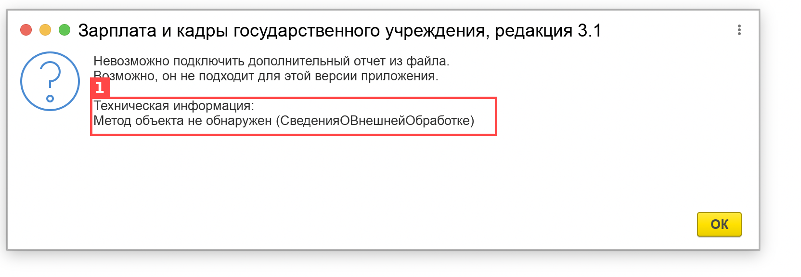
| № | Что это |
|---|---|
| 1 | «Метод объекта не обнаружен (СведенияОВнешнейОбработке)»: файл открылся, а функции регистрации в нём нет |
Теперь отчёт подходит конфигурации — ошибки «Таблица не найдена» больше нет. Осталась регистрация.
Шаг 13. Функция СведенияОВнешнейОбработке
Зачем. Из этой функции БСП узнаёт, что за файл ей дали, и заполняет карточку справочника.
Что получим. Модуль объекта отчёта с функцией регистрации, без предупреждений EDT.
Что делаем. Навигатор → проект → «Отчеты» → правый клик по отчёту → «Открыть модуль объекта». Код:
#Если Сервер Или ТолстыйКлиентОбычноеПриложение Или ВнешнееСоединение Тогда
#Область ПрограммныйИнтерфейс
// Возвращает сведения для регистрации отчета в подсистеме "Дополнительные отчеты и обработки".
//
// Возвращаемое значение:
// см. ДополнительныеОтчетыИОбработки.СведенияОВнешнейОбработке
//
Функция СведенияОВнешнейОбработке() Экспорт
ПараметрыРегистрации = ДополнительныеОтчетыИОбработки.СведенияОВнешнейОбработке("2.2.2.1");
ПараметрыРегистрации.Вид = ДополнительныеОтчетыИОбработкиКлиентСервер.ВидОбработкиДополнительныйОтчет();
ПараметрыРегистрации.Версия = "1.0";
ПараметрыРегистрации.БезопасныйРежим = Истина;
Команда = ПараметрыРегистрации.Команды.Добавить();
Команда.Представление = НСтр("ru = 'Подразделения по организациям'");
Команда.Идентификатор = "ОткрытьОтчет";
Команда.Использование = ДополнительныеОтчетыИОбработкиКлиентСервер.ТипКомандыОткрытиеФормы();
Команда.ПоказыватьОповещение = Ложь;
Возврат ПараметрыРегистрации;
КонецФункции
#КонецОбласти
#КонецЕсли
Разбор по строкам:
| Строка | Что делает |
|---|---|
#Если Сервер Или … Тогда |
Код модуля объекта работает только на сервере. На клиенте БСП эту функцию не вызывает |
#Область ПрограммныйИнтерфейс |
Область по стандарту 1С: здесь экспортные методы, которые вызывает чужой код |
ДополнительныеОтчетыИОбработки.СведенияОВнешнейОбработке("2.2.2.1") |
БСП сама создаёт структуру регистрации со всеми полями по умолчанию. "2.2.2.1" — версия БСП, под которую написан отчёт: БСП сверяет, понимает ли она его |
.Вид = …ВидОбработкиДополнительныйОтчет() |
Это дополнительный отчёт. Есть ещё печатная форма, заполнение объекта, дополнительная обработка и др. (раздел 7) |
.Версия = "1.0" |
Версия файла. Видна в списке доп. отчётов — по ней понятно, что стоит у клиента |
.БезопасныйРежим = Истина |
Отчёт только читает данные — безопасного режима ему хватает. Видно на карточке: «Режим работы: Безопасный» |
Команды.Добавить() |
Одна команда — один пункт для пользователя |
.Представление |
Название команды в меню. НСтр — строка для перевода на другие языки |
.Идентификатор |
Внутреннее имя команды. Для отчёта, открывающего форму, — любое понятное |
.Использование = …ТипКомандыОткрытиеФормы() |
Команда открывает форму отчёта. Другие варианты — вызов клиентского или серверного метода, запуск по расписанию |
.ПоказыватьОповещение = Ложь |
Не показывать всплывающее «Команда выполнена» — для отчёта не нужно |
Возврат ПараметрыРегистрации |
Отдаём структуру БСП |
Предупреждение 1 — нет комментария. Сразу после вставки:
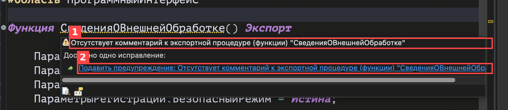
| № | Что это |
|---|---|
| 1 | Стандарт 1С: у экспортного метода должно быть описание — его вызывает чужой код |
| 2 | «Подавить предупреждение» не нажимаем: так прячут, а не исправляют |
Предупреждение 2 — тип в описании. Сначала описание было Структура - см. ДополнительныеОтчетыИОбработки.СведенияОВнешнейОбработке.:
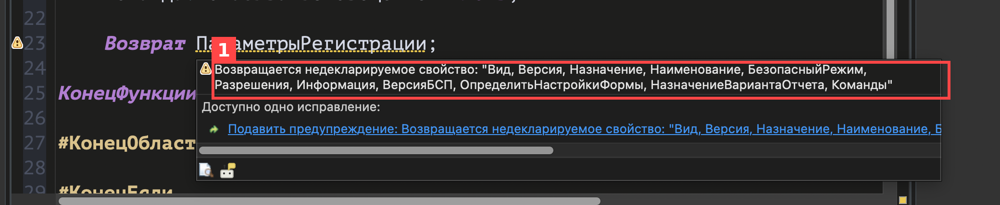
| № | Что это |
|---|---|
| 1 | EDT читает описание как объявление типа. «Структура» без полей — значит, Вид, Версия, Команды… «не объявлены» |
| Запись в описании | Как понимает EDT |
|---|---|
Структура - см. Модуль.Функция |
Тип «Структура», см. — просто текст. Поля неизвестны |
см. Модуль.Функция |
Тип и все поля берутся из описания указанной функции |
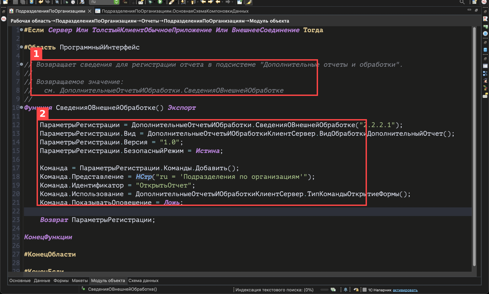
| № | Что это |
|---|---|
| 1 | Описание: что делает функция и ссылка см. на функцию БСП |
| 2 | Тело функции регистрации |
Шаг 14. Загрузить отчёт в справочник
Зачем. Файл попадает в базу, БСП читает регистрацию.
Что получим. Карточку «Дополнительный отчет», заполненную из функции регистрации.
Что делаем. Экспорт → сборка → «Добавить из файла…» → «Продолжить» → .erf.
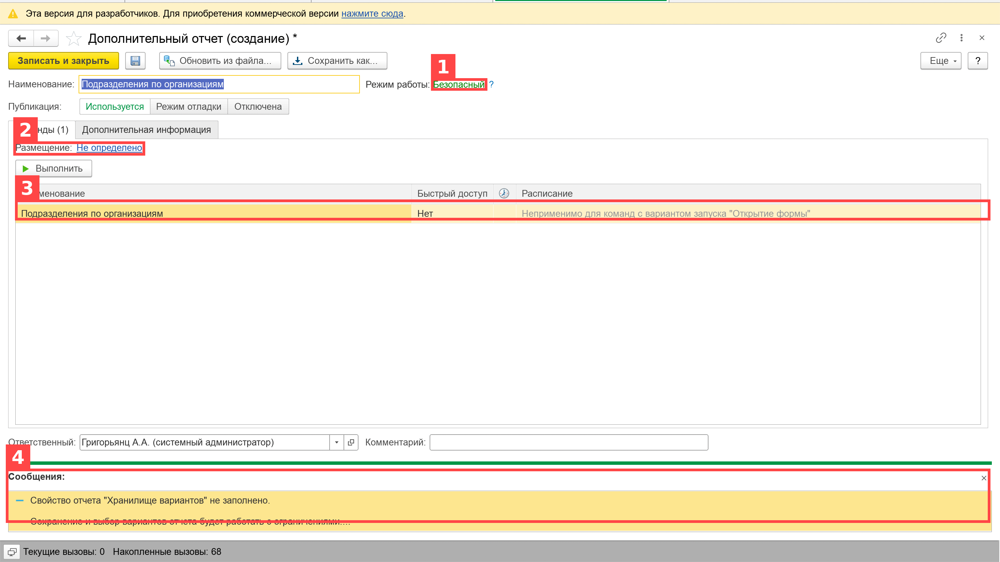
| № | Что это |
|---|---|
| 1 | «Режим работы: Безопасный» — из БезопасныйРежим = Истина |
| 2 | «Размещение: Не определено» — пользователь отчёт пока нигде не увидит (шаг 15) |
| 3 | Команда «Подразделения по организациям»; быстрый доступ «Нет»; расписание «Неприменимо… "Открытие формы"» — из ТипКомандыОткрытиеФормы() |
| 4 | «Свойство отчета "Хранилище вариантов" не заполнено» — предупреждение, не ошибка. Исправим в шаге 18 |
Шаг 15. Разместить команду
Зачем. Размещение — в каком разделе программы появится команда. Отчёт про подразделения — для кадровиков.
Что получим. «Размещение: Кадры».
Что делаем. Нажать «Не определено».
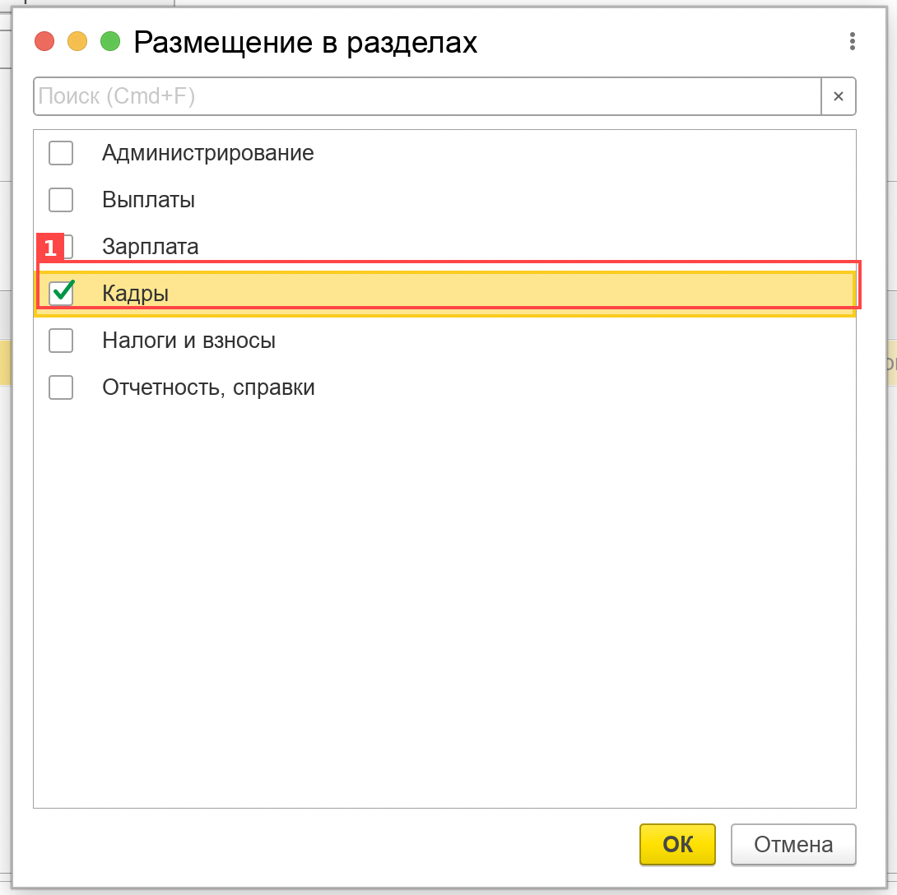
| № | Что это |
|---|---|
| 1 | «Кадры». Можно отметить несколько разделов |
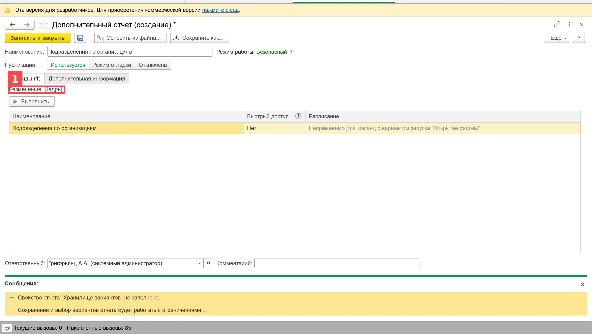
| № | Что это |
|---|---|
| 1 | «Размещение: Кадры» |
Шаг 16. Быстрый доступ
Зачем. Размещение — в каком разделе лежит отчёт. Быстрый доступ — кому команда выведена на виду, без поиска по списку доп. отчётов.
Что получим. В колонке «Быстрый доступ» — выбранные пользователи.
Что делаем. Двойной клик по «Нет» в колонке «Быстрый доступ».
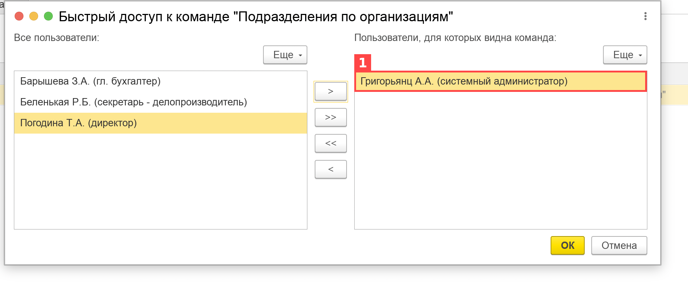
| № | Что это |
|---|---|
| 1 | Григорьянц перенесён вправо кнопкой > |
«ОК» → «Записать и закрыть».
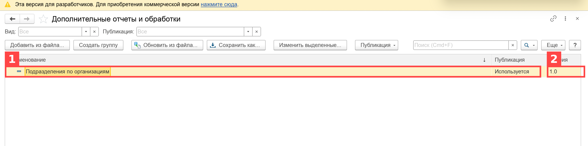
| № | Что это |
|---|---|
| 1 | «Подразделения по организациям», «Используется» |
| 2 | Версия 1.0 — из функции регистрации |
Шаг 17. Отчёт у пользователя
Зачем. Проверить отчёт так, как его увидит клиент.
Что получим. Сформированный отчёт из меню раздела.
Что делаем. Раздел «Кадры».
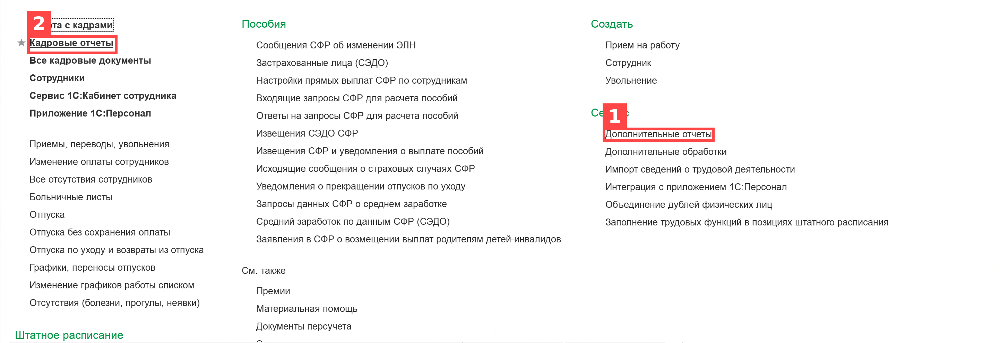
| № | Что это |
|---|---|
| 1 | «Сервис» → «Дополнительные отчеты» — здесь все команды доп. отчётов, размещённые в разделе |
| 2 | «Кадровые отчеты» — панель отчётов раздела. Нашего отчёта там пока нет (шаг 20) |
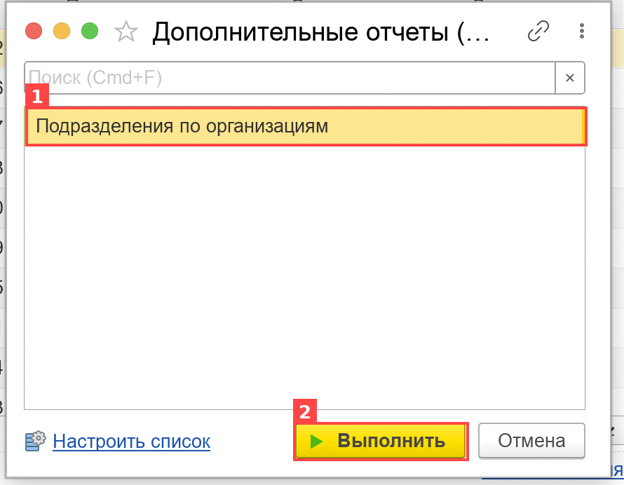
| № | Что это |
|---|---|
| 1 | Наша команда |
| 2 | «Выполнить» — откроется форма отчёта |
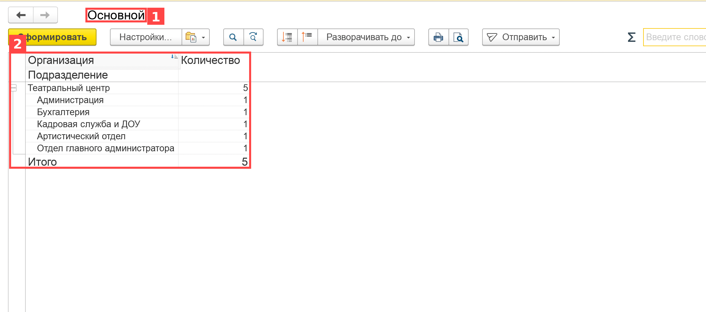
| № | Что это |
|---|---|
| 1 | Заголовок «Основной» — имя варианта, а не отчёта. Исправим в шаге 18 |
| 2 | Организация, под ней подразделения, «Итого» |
Форма не наша: это универсальная форма отчёта БСП — «Настройки…», «Разворачивать до», «Отправить», Σ. Мы её не рисовали, пользователь получил всё как в типовых отчётах.
Проверка цифрами:
| Организация | Подразделений | Расчёт |
|---|---|---|
| Театральный центр | 5 | Администрация, Бухгалтерия, Кадровая служба и ДОУ, Артистический отдел, Отдел главного администратора: 1 × 5 |
| Итого | 5 | Одна организация |
Шаг 18. Хранилище вариантов, представление, версия 1.1
Зачем. Без хранилища вариантов пользователь не может сохранять свои варианты, а БСП не видит вариант отчёта — его нельзя вывести на панель отчётов. Заодно задаём понятное название варианта и поднимаем версию: отчёт меняется.
Что получим. Исправленный отчёт для обновления у «клиента».
Что делаем в EDT.
- Двойной клик по отчёту (не по схеме) → «Основные» → «Хранилище вариантов» → кнопка
….
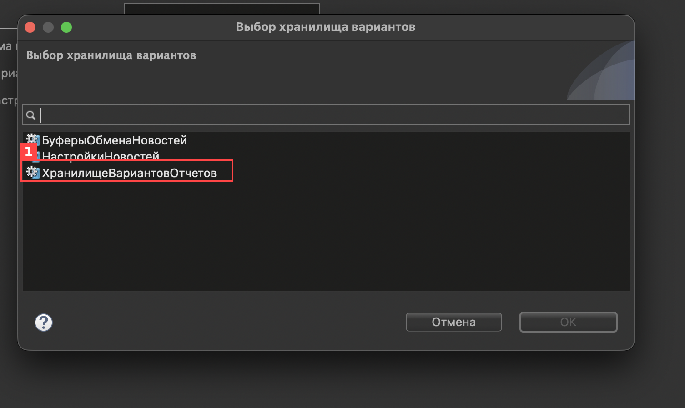
| № | Что это |
|---|---|
| 1 | ХранилищеВариантовОтчетов — хранилище БСП из конфигурации ЗГУ. Список берётся из базового проекта |
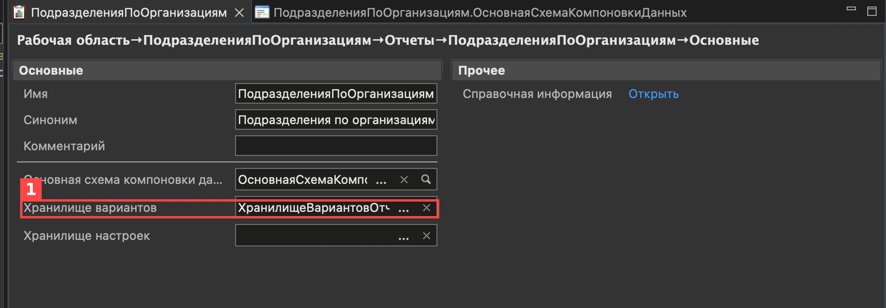
| № | Что это |
|---|---|
| 1 | «Хранилище вариантов» заполнено |
- Схема → «Настройки» → таблица вариантов → у «Основной» колонка «Представление».
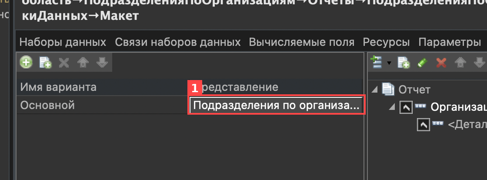
| № | Что это |
|---|---|
| 1 | «Подразделения по организациям» — это название пользователь увидит в заголовке и на панели отчётов |
- В модуле:
ПараметрыРегистрации.Версия = "1.1";.
Разбор: сбой проверки EDT. После смены хранилища в модуле появились предупреждения:
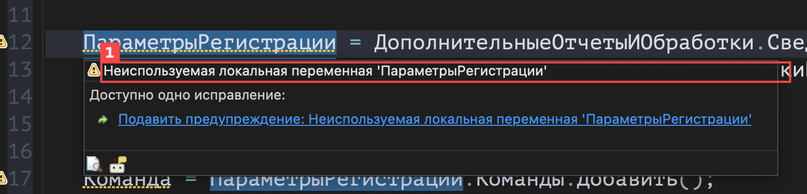
| № | Что это |
|---|---|
| 1 | Ложное предупреждение: переменная используется ниже. EDT не перепроверил модуль после изменения свойств отчёта |
Исправление — пересобрать проект: «Проект» → «Очистить…».
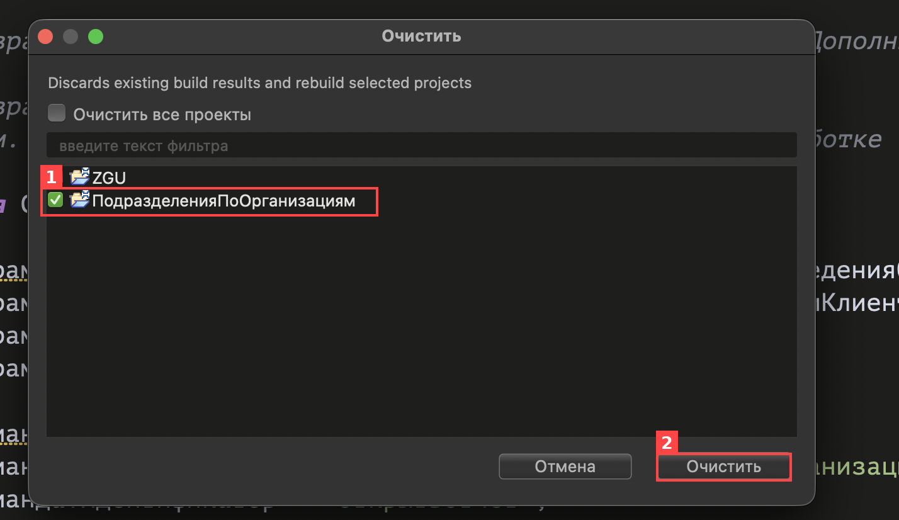
| № | Что это |
|---|---|
| 1 | Только ПодразделенияПоОрганизациям. ZGU не отмечаем — его пересборка долгая |
| 2 | «Очистить». Код и настройки не пропадут: удаляются только результаты проверки, EDT строит их заново |
Предупреждения пропали. Cmd+S → экспорт → сборка.
Шаг 19. Обновить из файла
Зачем. Отчёт уже подключён у клиента: с размещением, быстрым доступом, пользовательскими настройками. «Добавить из файла» создало бы второй отчёт, и всё пришлось бы настраивать заново. «Обновить из файла» меняет только файл в существующей карточке.
Что получим. Тот же элемент справочника с версией 1.1.
Что делаем. Список доп. отчётов → правый клик по отчёту.
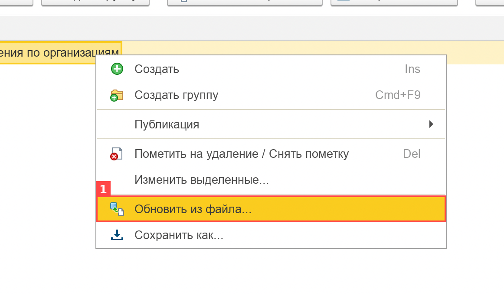
| № | Что это |
|---|---|
| 1 | «Обновить из файла…» → «Продолжить» → новый .erf |
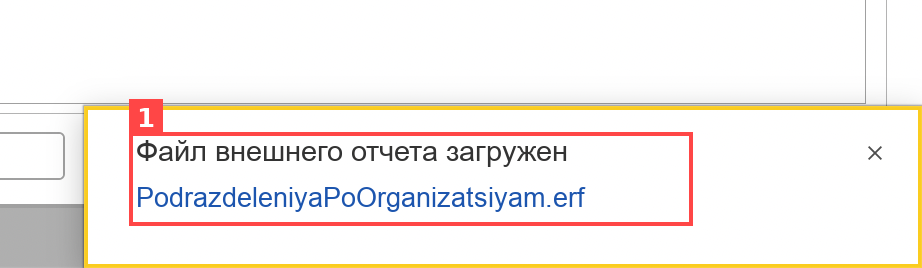
| № | Что это |
|---|---|
| 1 | «Файл внешнего отчета загружен» |
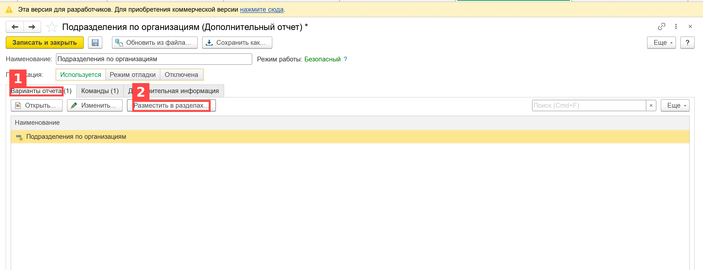
| № | Что это |
|---|---|
| 1 | Новая вкладка «Варианты отчета (1)» — появилась благодаря хранилищу вариантов. Сообщения о хранилище больше нет |
| 2 | «Разместить в разделах…» — размещение варианта (шаг 20) |
Шаг 20. Разместить вариант на панели отчётов
Зачем. Размещение команды (шаг 15) выводит отчёт в «Сервис» → «Дополнительные отчеты». На панель «Кадровые отчеты» БСП выводит варианты, и их размещают отдельно.
Что получим. Отчёт на панели «Кадровые отчеты».
До размещения вариант висел в конце панели:
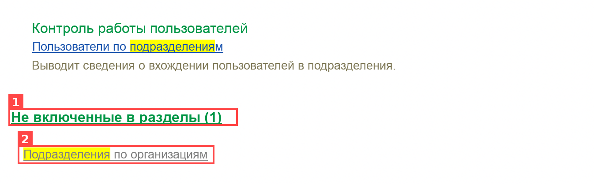
| № | Что это |
|---|---|
| 1 | Группа «Не включенные в разделы» |
| 2 | Наш вариант |
Что делаем. Вкладка «Варианты отчета» → вариант → «Разместить в разделах…».
| № | Что это |
|---|---|
| 1 | Раздел «Кадры». Ниже — подгруппы панели отчётов («Аттестации» и т. д.), можно поставить вариант в группу |
| 2 | «Разместить» |
«Записать и закрыть».
| № | Что это |
|---|---|
| 1 | Версия 1.1 |
3. Итоговый вид
Панель «Кадровые отчеты» (поиск «подразделения»):
| № | Что это |
|---|---|
| 1 | «Подразделения по организациям» среди кадровых отчётов. Серый цвет — вариант не выводится на панель по умолчанию, его видно при поиске или после «Настройка» → галка у отчёта |
Отчёт:
| № | Что это |
|---|---|
| 1 | Заголовок — представление варианта, а не «Основной» |
Настройки:
| № | Что это |
|---|---|
| 1 | Окно настроек БСП: «Простой» и «Расширенный» вид. В простом виде только «Дополнительно» — у отчёта нет параметров и отборов в быстром доступе. Добавим в практике Б |
Что сделано и откуда это видно:
| Проверка | Где видно |
|---|---|
| Отчёт подключён и используется | Список доп. отчётов: «Используется», 1.1 |
| Регистрация работает | Карточка: безопасный режим, команда, версия |
| Команда в разделе | «Кадры» → «Сервис» → «Дополнительные отчеты» |
| Вариант на панели | «Кадры» → «Кадровые отчеты» |
| Цифры | Театральный центр 5 = 5 подразделений по 1, Итого 5 |
4. Ловушки
1. Учиться на реальной базе клиента.
- Симптом: в базе настоящие ФИО, паспорта, зарплаты. Скрины такой базы нельзя ни публиковать, ни показывать.
- Причина: коллеги дали выгрузку рабочей базы вместо демо.
- Исправление: демо-база из поставки конфигурации (шаги 1–2).
2. .dt не загружается: «Ошибка формата потока».
- Симптом: «Загрузить информационную базу…» в конфигураторе падает с этой ошибкой.
- Причина: выгрузка сделана на более новой платформе (например, 8.5), чем твоя 8.3.27. Старая платформа новый формат не читает.
- Исправление: просить выгрузку на твоей версии платформы или ставить демо из дистрибутива.
3. Конфигуратор: «Ошибка блокировки информационной базы».
- Симптом: скрин 04.
- Причина: базу держит другой процесс 1С — ещё идёт создание базы или открыт второй конфигуратор.
- Исправление: «Отмена», дождаться окончания, закрыть лишние окна 1С.
4. Нет справочника «Дополнительные отчеты и обработки».
- Симптом: в «Администрировании» ссылка серая или её нет.
- Причина: выключена галка (функциональная опция) или вошёл не администратор.
- Исправление: галка в «Печатные формы, отчеты и обработки», вход под пользователем с полными правами.
5. Отчёт из другой конфигурации.
- Симптом: «Таблица не найдена "Документ.ПриходТовара.Товары"» (скрин 10).
- Причина: запрос написан на объектах
Uchebnaya. - Исправление: проект внешнего отчёта с базовым проектом той конфигурации, где он будет работать.
6. Импорт ЗГУ: версия 8.5.1 и тип доступа OS.
- Симптом: скрины 11 и 12; импорт не стартует или не может подключиться к базе.
- Причина: EDT подставляет самую новую версию и вход по учётке компьютера.
- Исправление: версия 8.3.27, тип доступа Infobase, пользователь-администратор.
7. Псевдоним таблицы не совпадает с полями.
- Симптом: «Поле не найдено», хотя справочник выбран правильно (скрин 24).
- Причина: таблица названа
КАК Подразделения, поля — черезПодразделенияОрганизаций.. - Исправление: одинаковое имя после
КАКи в обращениях к полям.
8. Ресурс по ссылке.
- Симптом: в детальных записях
1вместо названий подразделений. - Причина: поле стало ресурсом — СКД выводит его посчитанным значением.
- Исправление: отдельное поле-счётчик
1 КАК Количествои ресурсСумма(Количество).
9. «Метод объекта не обнаружен (СведенияОВнешнейОбработке)».
- Симптом: скрин 30.
- Причина: нет функции регистрации, или она без
Экспорт, или не в модуле объекта, а в модуле формы. - Исправление: функция в модуле объекта отчёта, с
Экспорт, внутри#Если Сервер….
10. Предупреждения EDT к функции регистрации.
- Симптом: «Отсутствует комментарий…», «Возвращается недекларируемое свойство».
- Причина: стандарт требует описание экспортного метода;
Структура - см.объявляет пустую структуру. - Исправление: описание с
Возвращаемое значение:и строкойсм. ДополнительныеОтчетыИОбработки.СведенияОВнешнейОбработкебез типа впереди. Не подавлять.
11. Ложное «Неиспользуемая локальная переменная».
- Симптом: после правки свойств отчёта предупреждения на рабочем коде, фоновых задач нет.
- Причина: EDT не перепроверил модуль.
- Исправление: «Проект» → «Очистить…» только для проекта отчёта.
12. Отчёт подключён, но в разделе его не видно.
- Симптом: на панели раздела нет отчёта.
- Причина: не задано размещение команды; или ищешь на панели отчётов, а там выводятся варианты, а не команды.
- Исправление: размещение команды → «Сервис» → «Дополнительные отчеты»; хранилище вариантов + «Разместить в разделах…» → панель отчётов.
13. «Хранилище вариантов не заполнено».
- Симптом: предупреждение в карточке, заголовок отчёта «Основной», отчёт в «Не включенные в разделы».
- Причина: у отчёта не указано свойство «Хранилище вариантов».
- Исправление:
ХранилищеВариантовОтчетовв свойствах отчёта + представление у варианта.
14. Изменил отчёт — загрузил его заново через «Добавить из файла».
- Симптом: в списке два одинаковых отчёта; у нового нет размещения и быстрого доступа.
- Причина: «Добавить» создаёт новый элемент справочника.
- Исправление: для подключённого отчёта — только «Обновить из файла…». И поднимай версию в регистрации.
15. Собрал .erf, а в ЗГУ старое поведение.
- Симптом: правки не видны.
- Причина: не сделан один из шагов цикла:
Cmd+S→ экспорт → сборка → «Обновить из файла» → «Записать». Или форма отчёта осталась открытой. - Исправление: весь цикл, потом закрыть и заново открыть отчёт. Проверка — версия в списке.
5. Практика А
Внешний отчёт «Должности» для ЗГУ. Без раздела 2.
- Новый проект внешнего отчёта в области
zgu, базовый проектZGU. - Источник — справочник должностей ЗГУ. Сначала найди его в навигаторе
ZGUи посмотри, есть ли у него владелец и иерархия. - Отчёт: список должностей, без помеченных на удаление, с количеством в «Итого».
- Регистрация: вид «Дополнительный отчет», версия 1.0, безопасный режим, одна команда.
- Хранилище вариантов и представление варианта — сразу.
- Подключи в разделе «Кадры», быстрый доступ — пользователю «Погодина Т.А. (директор)».
- Проверка: зайди в базу под Погодиной. Отчёт виден в «Кадры» → «Сервис» → «Дополнительные отчеты» и на панели «Кадровые отчеты». Число в «Итого» совпадает с количеством строк в списке должностей ЗГУ («Кадры» → «Должности»).
6. Практика Б
Задача делается вне сквозного проекта, в ZGU_Demo (по плану 4.4б — вне проекта). Коммита нет.
Отчёт ПодразделенияПоОрганизациям, версия 1.2: отбор по организации.
Что должно получиться:
- на форме отчёта, без «Настроек…», поле «Организация»: пользователь выбирает организацию и формирует;
- по умолчанию отбор выключен — выводятся все организации;
- в «Настройках…» в виде «Простой» этот отбор тоже виден;
- в регистрации версия
1.2; - отчёт обновлён у «клиента» через «Обновить из файла»: размещение, быстрый доступ и размещение варианта сохранились.
Проверка:
- в списке доп. отчётов версия 1.2, отчёт один;
- без отбора — «Театральный центр», 5;
- с отбором по этой же организации — то же самое; с отбором по любой другой организации из справочника «Организации» — пустой отчёт или её подразделения.
Ответь себе: почему исправленный отчёт клиенту загружают через «Обновить из файла», а не удаляют старый и не добавляют новый? Что потеряет пользователь во втором случае?
7. Справочник
Поля структуры регистрации — 👀
| Поле | Что значит |
|---|---|
Вид |
Дополнительный отчёт, дополнительная обработка, печатная форма, заполнение объекта, создание связанных объектов, отчёт объекта |
Версия |
Строка, видна в списке |
БезопасныйРежим |
Истина — ограниченный режим |
Назначение |
Для печатных форм и обработок объектов: к каким документам или справочникам привязана (глава 5, задача 5.5) |
Информация |
Описание для администратора |
Команды |
Таблица команд |
Разрешения |
Что отчёт может делать за пределами безопасного режима (файлы, интернет) |
Виды обработок — 👀
Функция ДополнительныеОтчетыИОбработкиКлиентСервер.… |
Что это |
|---|---|
ВидОбработкиДополнительныйОтчет() |
Отчёт в разделе |
ВидОбработкиДополнительнаяОбработка() |
Обработка в разделе |
ВидОбработкиПечатнаяФорма() |
Печатная форма документа (5.5) |
ВидОбработкиЗаполнениеОбъекта() |
Кнопка «Заполнить» в форме объекта |
ВидОбработкиОтчет() |
Отчёт из формы объекта |
ВидОбработкиСозданиеСвязанныхОбъектов() |
Создание связанных объектов |
Типы команд — 👀
Функция ДополнительныеОтчетыИОбработкиКлиентСервер.… |
Что делает команда |
|---|---|
ТипКомандыОткрытиеФормы() |
Открывает форму — для отчётов |
ТипКомандыВызовКлиентскогоМетода() |
Вызывает процедуру формы на клиенте |
ТипКомандыВызовСерверногоМетода() |
Вызывает процедуру ВыполнитьКоманду в модуле объекта на сервере. Можно запускать по расписанию |
Публикация
| Значение | Кто видит |
|---|---|
| Используется | Все, кому размещено |
| Режим отладки | Только администраторы. Удобно проверить новую версию у клиента до выдачи всем |
| Отключена | Никто, но настройки сохранены |
Цикл правки отчёта у клиента
| # | Где | Что |
|---|---|---|
| 1 | EDT | Правка, версия +1 в СведенияОВнешнейОбработке, Cmd+S |
| 2 | EDT | «Экспорт…» → ~/1C/zgu/<папка> |
| 3 | Finder | build-erf-zgu.command |
| 4 | ЗГУ | «Дополнительные отчеты и обработки» → «Обновить из файла…» → «Записать и закрыть» |
| 5 | ЗГУ | Проверить версию в списке, закрыть и открыть отчёт |
Где что лежит
| Что | Где |
|---|---|
| Демо-база | ~/1C/bases/ZGU_Demo |
| Шаблоны конфигураций | ~/.1cv8/1C/1cv8/tmplts/ |
| Рабочая область EDT | ~/1C/workspaces/zgu |
| XML отчётов для ЗГУ | ~/1C/zgu/<папка> |
| Скрипт сборки для ЗГУ | ~/1C/build-erf-zgu.command (база и пользователь — строки BASE=, USR= в начале) |
| Готовые файлы | ~/1C/build_zgu |